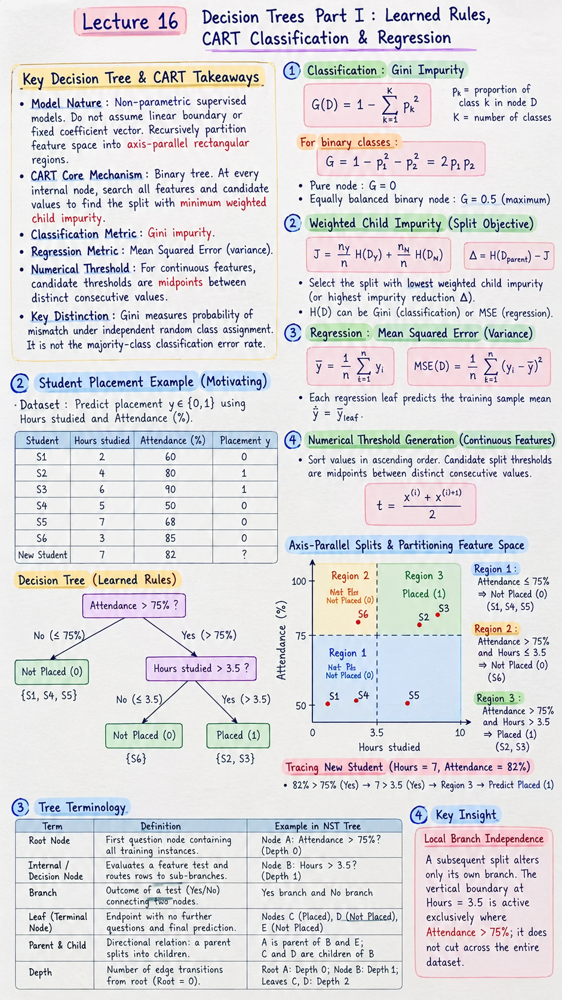

Short Notes & Visual Summary
Core principles, formulas, and cheat-sheet summary for Lecture 16:

Click image to open full size in a new tab
- Model Nature: Decision Trees are non-parametric supervised models. They do not assume a linear boundary or fixed coefficient vector; instead, they recursively partition feature space into axis-parallel rectangular regions.
- CART Core Mechanism: CART (Classification and Regression Trees) is strictly binary. At every internal node, it searches all available features and all valid candidate values/midpoints to find the single binary question minimizing weighted child impurity.
- Classification Metric (Gini Impurity): $$G(D) = 1 - \sum_{k=1}^K p_k^2$$ For binary classes: \(G = 1 - p_1^2 - p_2^2 = 2 p_1 p_2\). A pure node has \(G = 0\); an equally balanced binary node has maximum \(G = 0.5\).
- Weighted Child Impurity Objective: $$J = \frac{n_Y}{n} H(D_Y) + \frac{n_N}{n} H(D_N), \quad \Delta = H(D_{\text{parent}}) - J$$ The split with the lowest weighted child impurity (or highest impurity reduction \(\Delta\)) is selected.
- Regression Metric (Mean Squared Error / Variance): $$\bar{y} = \frac{1}{n} \sum_{i=1}^n y_i, \quad \text{MSE}(D) = \frac{1}{n} \sum_{i=1}^n (y_i - \bar{y})^2$$ Each regression leaf predicts the training sample mean \(\hat{y} = \bar{y}_{\text{leaf}}\).
- Numerical Threshold Generation: For continuous features, values are sorted in ascending order. Candidate split thresholds \(t\) are the exact midpoints between distinct consecutive values: \(t = \frac{x_{(i)} + x_{(i+1)}}{2}\).
- Key Distinction: Gini impurity measures the probability of mismatch under independent random class assignment. It is not the majority-class classification error rate.
Opening Scenario & Decision Tree Foundations
1.1 Student Placement Motivating Example
Consider the introductory NST placement scenario with two continuous predictors: Hours studied and Attendance (%), predicting binary target \(y \in \{0, 1\}\) (0 = Not Placed, 1 = Placed):
| Student | Hours studied | Attendance (%) | Placement \(y\) |
|---|---|---|---|
| S1 | 2 | 60 | 0 |
| S2 | 4 | 80 | 1 |
| S3 | 6 | 90 | 1 |
| S4 | 5 | 50 | 0 |
| S5 | 7 | 68 | 0 |
| S6 | 3 | 85 | 0 |
| New Student | 7 | 82 | ? |
Instead of seeking a single hyper-plane (as in Logistic Regression), a Decision Tree builds nested, human-interpretable if–else logic:
- Split 1 (Root): Is Attendance > 75%?
- No (\(\le 75\%\)): Rows {S1, S4, S5} → All targets are 0 → Pure Leaf: Predict Not Placed (0).
- Yes (> 75%): Rows {S2, S3, S6} → Targets are {1, 1, 0} → Mixed node. Answering "Yes" does not guarantee placement (student S6 attended 85% but studied only 3 hours).
- Split 2 (Inside the Yes branch only): Is Hours studied > 3.5?
- No (\(\le 3.5\)): Row {S6} → Pure Leaf: Predict Not Placed (0).
- Yes (> 3.5): Rows {S2, S3} → Pure Leaf: Predict Placed (1).
1.2 Axis-Parallel Splits & Partitioning Feature Space
Each condition in a decision tree is strictly axis-parallel (orthogonal to one feature axis):
- Region 1: \(\text{Attendance} \le 75\% \implies \text{Not Placed } (0)\) (Contains S1, S4, S5).
- Region 2: \(\text{Attendance} > 75\% \text{ and } \text{Hours} \le 3.5 \implies \text{Not Placed } (0)\) (Contains S6).
- Region 3: \(\text{Attendance} > 75\% \text{ and } \text{Hours} > 3.5 \implies \text{Placed } (1)\) (Contains S2, S3).
Tracing the New Student (Hours = 7, Attendance = 82%):
\(82\% > 75\%\) (Yes) → \(7 > 3.5\) (Yes) → Falls squarely into Region 3 → Predict Placed (1).
A subsequent split alters only its own branch. The vertical boundary at \(\text{Hours} = 3.5\) is active exclusively where \(\text{Attendance} > 75\%\); it does not cut across the entire dataset.
1.3 Tree Terminology: Root, Nodes, Leaves, and Depth
| Term | Definition | Example in NST Tree |
|---|---|---|
| Root Node | The very first question node containing all training instances. | Node A: Attendance > 75%? (Depth 0) |
| Internal / Decision Node | Any node that evaluates a feature test and routes rows to sub-branches. | Node B: Hours > 3.5? (Depth 1) |
| Branch | The outcome of a test (Yes/True or No/False) connecting two nodes. | Yes branch and No branch |
| Leaf (Terminal Node) | An endpoint that contains no further questions and outputs a final prediction. | Nodes C (Placed), D (Not Placed), E (Not Placed) |
| Parent & Child | Directional relation: a parent splits into two or more children. | A is parent of B and E; C and D are children of B |
| Depth | The number of edge transitions from the root: Root = 0. | Root A: Depth 0; Node B: Depth 1; Leaves C, D: Depth 2 |
CART Classification Framework & Gini Impurity
2.1 The CART Splitting Philosophy (Brute-Force Search)
CART stands for Classification and Regression Trees (Breiman et al., 1984). It operates via greedy, recursive binary splitting:
- To create a node from dataset \(D\) of size \(n\), we specify two components: a feature \(f\) and a value/threshold \(t\).
- This question partitions \(D\) into two mutually exclusive sets: $$D_Y = \{x \in D \mid \text{Question is True}\}, \quad D_N = \{x \in D \mid \text{Question is False}\}$$ where \(n_Y = |D_Y|\), \(n_N = |D_N|\), and \(n_Y + n_N = n\).
- We evaluate candidate splits by computing the weighted child impurity: $$J(f, t) = \frac{n_Y}{n} H(D_Y) + \frac{n_N}{n} H(D_N)$$
- CART brute-force searches across every single candidate (all categorical values, all continuous numerical midpoints) and selects the pair \((f^*, t^*)\) achieving the minimum weighted child impurity.
2.2 Mathematical Formulation of Gini Impurity
In CART classification, the canonical impurity measure \(H(D)\) is the Gini Impurity \(G(D)\):
$$G(D) = 1 - \sum_{k=1}^K p_k^2$$where \(p_k\) is the empirical fraction of observations in node \(D\) that belong to class \(k\): \(p_k = \frac{n_k}{n}\).
- For a perfectly pure node (all items belong to one class): \(p_1 = 1, p_{k \ne 1} = 0 \implies G(D) = 1 - (1)^2 = 0\).
- For a two-class binary problem (\(p_1 + p_2 = 1\)): $$G(D) = 1 - p_1^2 - p_2^2 = 1 - p_1^2 - (1 - p_1)^2 = 2 p_1 (1 - p_1)$$ When evenly mixed (\(p_1 = 0.5, p_2 = 0.5\)), Gini reaches its maximum of \(2(0.5)(0.5) = 0.5\).
- For general \(K\) classes: The theoretical maximum Gini occurs when all classes are equally frequent (\(p_k = 1/K\)): $$G_{\max} = 1 - \sum_{k=1}^K \left(\frac{1}{K}\right)^2 = 1 - K \cdot \frac{1}{K^2} = 1 - \frac{1}{K}$$
2.3 Intuition of Gini: The Fruit Basket Mismatch Interpretation
Why does \(1 - \sum p_k^2\) represent impurity? The worksheet provides an intuitive probabilistic thought experiment:
Suppose you draw a fruit at random from a basket, observe its true class, and place it back. Then you draw a second fruit at random and guess that the first fruit's class matches the second fruit's class.
Gini Impurity is precisely the probability of making an incorrect guess (a class mismatch):
$$P(\text{Match}) = \sum_{k=1}^K P(\text{Both are class } k) = \sum_{k=1}^K p_k \cdot p_k = \sum_{k=1}^K p_k^2$$ $$P(\text{Mismatch}) = 1 - P(\text{Match}) = 1 - \sum_{k=1}^K p_k^2 = G(D)$$Concrete Examples from Lecture 16:
- Basket with 3 Oranges and 2 Apples (\(n=5\)): $$p_O = 3/5, \quad p_A = 2/5$$ $$P(\text{Match}) = (3/5)^2 + (2/5)^2 = \frac{9 + 4}{25} = \frac{13}{25} = 0.52$$ $$G = P(\text{Mismatch}) = 1 - \frac{13}{25} = \frac{12}{25} = 0.48$$
- Basket with 5 equally frequent fruits (Orange, Mango, Grape, Banana, Cranberry; \(p_k = 1/5\)): $$P(\text{Match}) = 5 \times (1/5)^2 = 5/25 = 1/5 = 0.20$$ $$G = 1 - 0.20 = 0.80$$
In the 3-Orange / 2-Apple basket, a deterministic majority-class leaf always predicts "Orange", yielding an error rate of \(2/5 = 0.40\) (40%). Its Gini impurity, however, is \(0.48\) (48%). Gini measures random label assignment mismatch, which heavily penalizes mixed probability distributions.
Step-by-Step CART Classification Walkthrough
We work through the complete 10-row employment dataset from Worksheet 16:
| Row | Degree | Field | Average Grade | Job Outcome (\(y\)) |
|---|---|---|---|---|
| 0 | UG | Science | 89 | E (Employed) |
| 1 | UG | Arts | 92 | U (Unemployed) |
| 2 | PG | Science | 95 | E |
| 3 | PhD | Science | 85 | E |
| 4 | PG | Arts | 98 | U |
| 5 | PhD | Arts | 90 | E |
| 6 | UG | Science | 88 | U |
| 7 | PG | Arts | 93 | E |
| 8 | UG | Arts | 94 | U |
| 9 | PhD | Science | 86 | E |
Parent Dataset Metrics: Total rows \(n = 10\) (6 Employed, 4 Unemployed):
$$p_E = 6/10 = 0.6, \quad p_U = 4/10 = 0.4$$ $$G(D_{\text{parent}}) = 1 - (0.6)^2 - (0.4)^2 = 1 - 0.36 - 0.16 = \frac{12}{25} = 0.4800$$3.1 Evaluating Categorical Splits (Field and Degree)
Candidate 1: Is Field = Science?
- Yes Child (\(n_Y = 5\), rows {0, 2, 3, 6, 9}): 4 E, 1 U $$G_Y = 1 - (4/5)^2 - (1/5)^2 = 1 - 16/25 - 1/25 = \frac{8}{25} = 0.3200$$
- No Child (\(n_N = 5\), rows {1, 4, 5, 7, 8}): 2 E, 3 U $$G_N = 1 - (2/5)^2 - (3/5)^2 = 1 - 4/25 - 9/25 = \frac{12}{25} = 0.4800$$
- Weighted Impurity \(J_G\): $$J_G = \frac{5}{10}(0.3200) + \frac{5}{10}(0.4800) = \frac{2}{5} = 0.4000$$ $$\Delta G = 0.4800 - 0.4000 = 0.0800$$ Note: Asking Field = Arts? merely inverts the Yes and No labels, yielding identical \(J_G = 0.4000\).
Candidate 2: Is Degree = UG?
- Yes Child (\(n_Y = 4\), rows {0, 1, 6, 8}): 1 E, 3 U $$G_Y = 1 - (1/4)^2 - (3/4)^2 = 1 - 1/16 - 9/16 = \frac{6}{16} = \frac{3}{8} = 0.3750$$
- No Child (\(n_N = 6\), rows {2, 3, 4, 5, 7, 9}): 5 E, 1 U $$G_N = 1 - (5/6)^2 - (1/6)^2 = 1 - 25/36 - 1/36 = \frac{10}{36} = \frac{5}{18} \approx 0.2778$$
- Weighted Impurity \(J_G\): $$J_G = \frac{4}{10}\left(\frac{3}{8}\right) + \frac{6}{10}\left(\frac{5}{18}\right) = \frac{3}{20} + \frac{1}{6} = \frac{9 + 10}{60} = \frac{19}{60} \approx 0.3167$$ $$\Delta G = \frac{12}{25} - \frac{19}{60} = \frac{144 - 95}{300} = \frac{49}{300} \approx 0.1633$$
Other Degree Candidates:
- Degree = PG? \(J_G = 10/21 \approx 0.4762\)
- Degree = PhD? \(J_G = 12/35 \approx 0.3429\)
3.2 Evaluating Numerical Splits (Thresholding Average Grade)
To evaluate numerical feature Average Grade, we sort distinct values in ascending order and compute all adjacent midpoints:
| Sorted Grade | Outcome | Midpoint Candidate (\(t\)) | Weighted Gini \(J_G\) |
|---|---|---|---|
| 85 | E | (85+86)/2 = 85.5 | \(\frac{9}{10}(\frac{40}{81}) + \frac{1}{10}(0) = \frac{4}{9} \approx 0.4444\) |
| 86 | E | (86+88)/2 = 87.0 | \(\frac{8}{10}(\frac{1}{2}) + \frac{2}{10}(0) = \frac{2}{5} = \mathbf{0.4000}\) |
| 88 | U | (88+89)/2 = 88.5 | \(10/21 \approx 0.4762\) |
| 89 | E | (89+90)/2 = 89.5 | \(9/20 = 0.4500\) |
| 90 | E | (90+92)/2 = 91.0 | \(\frac{2}{5} = \mathbf{0.4000}\) |
| 92 | U | (92+93)/2 = 92.5 | \(7/15 \approx 0.4667\) |
| 93 | E | (93+94)/2 = 93.5 | \(44/105 \approx 0.4190\) |
| 94 | U | (94+95)/2 = 94.5 | \(19/40 = 0.4750\) |
| 95 | E | (95+98)/2 = 96.5 | \(\frac{2}{5} = \mathbf{0.4000}\) |
| 98 | U | (End of list) | — |
3.3 Root Selection & Recursive Partitioning
Comparing the best candidate from every feature:
- Best from Field: \(J_G = 0.4000\)
- Best from Grade: \(J_G = 0.4000\) (at thresholds 87, 91, 96.5)
- Best from Degree: \(J_G = \mathbf{0.3167}\) (at \(\text{Degree} = \text{UG}\)) ← GLOBAL WINNER!
Recursive Splitting within Children:
- UG Child (\(n=4\), rows {0, 1, 6, 8} with 1 E, 3 U):
Testing Field = Science? splits into:
- Yes (\(n=2\), rows {0, 6}: 1 E, 1 U). Next split: Grade \(\le 88.5\)? → Yes gives Row 6 (U, pure); No gives Row 0 (E, pure).
- No (\(n=2\), rows {1, 8}: 2 U) → Pure Leaf: Predict U.
- Non-UG Child (\(n=6\), rows {2, 3, 4, 5, 7, 9} with 5 E, 1 U): Testing Grade \(\le 96.5\)? isolates Row 4 (Grade 98, U) from Rows {2, 3, 5, 7, 9} (all E, pure) → Both leaves pure!
3.4 Final Tree Structure & Prediction Regions
The resulting tree reaches zero training impurity (\(G_{\text{tree}} = 0\)) with five pure leaves at maximum depth 3:
- Path 1: \(\text{UG} \to \text{Science} \to \text{Grade} \le 88.5 \implies \mathbf{U}\) (Row 6)
- Path 2: \(\text{UG} \to \text{Science} \to \text{Grade} > 88.5 \implies \mathbf{E}\) (Row 0)
- Path 3: \(\text{UG} \to \text{Arts} \implies \mathbf{U}\) (Rows 1, 8)
- Path 4: \(\text{Non-UG} \to \text{Grade} \le 96.5 \implies \mathbf{E}\) (Rows 2, 3, 5, 7, 9)
- Path 5: \(\text{Non-UG} \to \text{Grade} > 96.5 \implies \mathbf{U}\) (Row 4)
CART for Regression with Squared Error
4.1 Continuous Targets & Variance Impurity Formulation
When target \(y\) is continuous, CART measures node impurity using Mean Squared Error (sample variance) around the node's target mean \(\bar{y}\):
$$\bar{y} = \frac{1}{n} \sum_{i=1}^n y_i, \quad \text{MSE}(D) = \frac{1}{n} \sum_{i=1}^n (y_i - \bar{y})^2$$The splitting criterion minimizes the weighted child MSE:
$$J_{\text{MSE}} = \frac{n_Y}{n} \text{MSE}(D_Y) + \frac{n_N}{n} \text{MSE}(D_N), \quad \Delta = \text{MSE}(D_{\text{parent}}) - J_{\text{MSE}}$$Leaf Prediction Rule: Every regression leaf predicts the arithmetic mean of its training observations:
$$\hat{y}_{\text{leaf}} = \bar{y}_{\text{leaf}} = \frac{1}{n_{\text{leaf}}} \sum_{i \in \text{leaf}} y_i$$4.2 Categorical Split Candidates (Subject and Grade Level)
Consider the 8-row Test Score dataset from Section 4 of Worksheet 16:
| Row | Subject | Grade Level | Hours studied | Test Score \(y\) |
|---|---|---|---|---|
| 0 | Math | Freshman | 4 | 59 |
| 1 | Physics | Freshman | 1 | 82 |
| 2 | Physics | Freshman | 4 | 81 |
| 3 | Math | Junior | 6 | 60 |
| 4 | Physics | Sophomore | 1 | 73 |
| 5 | Physics | Junior | 3 | 85 |
| 6 | Physics | Junior | 4 | 61 |
| 7 | Physics | Freshman | 9 | 78 |
Parent Node Metrics:
$$\bar{y}_P = \frac{59 + 82 + 81 + 60 + 73 + 85 + 61 + 78}{8} = \frac{579}{8} = 72.375$$ $$\text{MSE}_P = \frac{6559}{64} \approx 102.4844$$Candidate: Is Subject = Math?
- Yes Child (Math; rows {0, 3}): Scores [59, 60] $$\mu_Y = \frac{59+60}{2} = 59.5, \quad \text{MSE}_Y = \frac{(59-59.5)^2 + (60-59.5)^2}{2} = \frac{0.25+0.25}{2} = 0.25$$
- No Child (Physics; rows {1, 2, 4, 5, 6, 7}): Scores [82, 81, 73, 85, 61, 78] $$\mu_N = \frac{460}{6} = \frac{230}{3} \approx 76.6667, \quad \text{MSE}_N = \frac{566}{9} \approx 62.8889$$
- Weighted MSE \(J\): $$J = \frac{2}{8}(0.25) + \frac{6}{8}\left(\frac{566}{9}\right) = \frac{1}{16} + \frac{566}{12} = \frac{2267}{48} \approx \mathbf{47.2292}$$ $$\Delta = 102.4844 - 47.2292 = 55.2552$$
Other Categorical Candidates:
- Grade = Freshman? \(J = 3059/32 \approx 95.5938\)
- Grade = Junior? \(J = 2827/30 \approx 94.2333\)
- Grade = Sophomore? \(J = 717/7 \approx 102.4286\)
4.3 Numerical Split Candidates (Midpoints of Hours Studied)
Distinct sorted values of Hours studied are {1, 3, 4, 6, 9}. Midpoints are:
- Hours ≤ 2: \(J = 4499/48 \approx 93.7292\)
- Hours ≤ 3.5: \(J = 338/5 = \mathbf{67.6000}\)
- Hours ≤ 5: \(J = 1579/16 \approx 98.6875\)
- Hours ≤ 7.5: \(J = 2743/28 \approx 97.9643\)
Comparing the strongest questions across all features:
- Subject: Subject = Math? → \(J = \mathbf{47.2292}\) (Winner!)
- Grade: Grade = Junior? → \(J = 94.2333\)
- Hours: Hours ≤ 3.5? → \(J = 67.6000\)
Selected Root: Subject = Math. At this initial split, predictions are 59.5 for Math and 76.67 for Physics.
4.4 Full Regression Tree Construction & Stepwise Predictions
Recursively partitioning until every leaf contains exactly one training row produces an 8-leaf tree with zero training MSE (\(\text{MSE}_{\text{tree}} = 0\)):
- Math branch: Split by Grade = Freshman? → Row 0 (\(\hat{y} = 59\)) and Row 3 (\(\hat{y} = 60\)).
- Physics branch: Split by Grade = Freshman?
- Physics Freshman: Split on Hours ≤ 6.5, then Hours ≤ 2.5 → yields Row 1 (\(\hat{y} = 82\)), Row 2 (\(\hat{y} = 81\)), Row 7 (\(\hat{y} = 78\)).
- Physics other Grades: Split on Hours ≤ 3.5 → Row 6 (\(\hat{y} = 61\)); remaining branch split by Sophomore? → Row 4 (\(\hat{y} = 73\)), Row 5 (\(\hat{y} = 85\)).
Comprehensive Dry Runs & Solved Practice Exercises
5.1 Practice P1: Mentoring Dataset Classification Dry Run
Problem Setup: 6 students with Hours \(\{1, 2, 3, 4, 5, 6\}\), Mentor \(\{\text{No, Yes, No, Yes, Yes, No}\}\), Selection \(y \in \{0, 1\}\):
- Rows: A(1, No, 0), B(2, Yes, 1), C(3, No, 0), D(4, Yes, 1), E(5, Yes, 0), F(6, No, 0).
- Parent class counts: 2 Selected (1), 4 Not Selected (0) → \(n=6\).
- Parent Gini: \(G(D_P) = 1 - (2/6)^2 - (4/6)^2 = 1 - 1/9 - 4/9 = \frac{4}{9} \approx 0.4444\).
Comparing Root Split Candidates:
| Question | Yes Counts (1/0) | No Counts (1/0) | \(G_Y\) | \(G_N\) | Weighted Gini \(J_G\) |
|---|---|---|---|---|---|
| Mentor = Yes | 2/1 (B, D, E) | 0/3 (A, C, F) | 4/9 ≈ 0.4444 | 0.0000 | \(\frac{3}{6}(\frac{4}{9}) + \frac{3}{6}(0) = \mathbf{0.2222}\) |
| Hours ≤ 1.5 | 0/1 (A) | 2/3 (B,C,D,E,F) | 0.0000 | 12/25 = 0.4800 | \(\frac{1}{6}(0) + \frac{5}{6}(0.48) = 0.4000\) |
| Hours ≤ 2.5 | 1/1 (A, B) | 1/3 (C,D,E,F) | 0.5000 | 3/8 = 0.3750 | \(\frac{2}{6}(0.5) + \frac{4}{6}(0.375) = 0.4167\) |
| Hours ≤ 3.5 | 1/2 (A, B, C) | 1/2 (D, E, F) | 4/9 ≈ 0.4444 | 4/9 ≈ 0.4444 | \(\frac{3}{6}(0.4444) + \frac{3}{6}(0.4444) = 0.4444\) |
| Hours ≤ 4.5 | 2/2 (A,B,C,D) | 0/2 (E, F) | 0.5000 | 0.0000 | \(\frac{4}{6}(0.5) + \frac{2}{6}(0) = 0.3333\) |
| Hours ≤ 5.5 | 2/3 (A,B,C,D,E) | 0/1 (F) | 12/25 = 0.4800 | 0.0000 | \(\frac{5}{6}(0.48) + \frac{1}{6}(0) = 0.4000\) |
Student claim: "The Hours split at 1.5 has a pure Yes child (\(G_Y = 0\)), so it must beat the Mentor split."
Refutation: False. A split must be evaluated on its weighted total child impurity across both branches. The \(\text{Hours} \le 1.5\) split isolates only 1 row in its pure child (\(w_Y = 1/6\)) while leaving 5 rows heavily mixed in the other child (\(G_N = 0.48\)), resulting in \(J_G = 0.4000\). Conversely, Mentor = Yes creates a pure 3-row No child (\(w_N = 3/6\)) and a smaller mixed child (\(n=3\)), achieving \(J_G = \mathbf{0.2222}\). Mentor is vastly superior.
5.2 Practice P2: Course & Hours Regression Dry Run
6 rows: A(1, Course A, 10), B(2, Course B, 50), C(3, Course A, 12), D(4, Course B, 50), E(5, Course A, 30), F(6, Course B, 50):
- Parent target values: [10, 50, 12, 50, 30, 50] → \(\sum y = 202 \implies \bar{y} = 202/6 = 33.67\).
- Testing
Course = A:- Yes Child (Course A; rows {A, C, E}): Scores [10, 12, 30] → \(\mu_Y = 52/3 \approx 17.33, \text{MSE}_Y = 82.89\).
- No Child (Course B; rows {B, D, F}): Scores [50, 50, 50] → \(\mu_N = 50.0, \text{MSE}_N = \mathbf{0.0000}\) (Perfect leaf!).
- Weighted MSE: \(J_{\text{MSE}} = \frac{3}{6}(82.89) + \frac{3}{6}(0) = \mathbf{41.44}\). This dominates all candidate Hours thresholds.
5.3 Practice P3: Conceptual Mastery, Proofs & Common Fallacies
- Gini vs. Majority Misclassification: A node with 6 employed and 4 unemployed has \(G = 0.48\). If it predicts majority class (Employed), the misclassification rate is \(4/10 = 40\%\), not 48%.
- Binary Encoding vs. Task Nature: Coding binary Placement as 0 and 1 does not make it a regression task. The nature of the target (discrete categorical classes vs. continuous real-valued metric) dictates whether the task is classification or regression.
- Zero Training Error ≠ Perfect Generalization: A tree grown until every leaf contains 1 observation achieves zero training MSE/impurity by memorizing noise and training outliers. It typically overfits and degrades on unseen test data.
- Identical Leaf Predictions: Any two test observations that traverse the tree and terminate in the same leaf receive the exact same prediction, regardless of differences in their individual feature values.
Strengths, Limitations & Theoretical Tradeoffs
6.1 Key Advantages of Decision Trees
| Advantage | Description & Concrete Practical Significance |
|---|---|
| White-Box Interpretability | Unlike black-box models (deep neural nets, SVMs), small trees can be parsed directly as explicit, human-readable logic rules (flowcharts). |
| No Feature Scaling Required | Because splits depend only on the rank order of features, monotonic transformations (standardization, normalization, log transforms) have zero effect on split selection. |
| Inherent Non-Linearity & Interactions | Naturally models feature interactions without manually engineering cross-product terms (e.g., condition on Hours only when Attendance > 75%). |
| Rapid Inference Time | Predicting a new row requires evaluating at most \(O(\text{depth})\) scalar comparisons along a single path from root to leaf, rather than matrix multiplications across all features. |
6.2 Limitations, Overfitting & Instability
- High Variance & Instability: Decision trees are notoriously high-variance estimators. A small perturbation in the training dataset can alter the root split, cascading completely different decision boundaries throughout all subsequent subtrees.
- Proneness to Severe Overfitting: Without stopping conditions (depth limits, leaf size constraints), trees expand until every leaf is pure, memorizing spurious noise and idiosyncratic training outliers.
- Axis-Parallel Constraint: Cannot smoothly capture diagonal boundaries (\(x_1 + x_2 > c\)); must approximate linear diagonal relationships with an inefficient "staircase" of horizontal and vertical splits.
How do we prevent trees from growing excessively complex and memorizing training noise? In Lecture 17, we study the ID3 algorithm (entropy and information gain), compare multi-way vs. binary splits, and develop systematic pruning methods: Pre-Pruning (hyperparameter stopping criteria) and Post-Pruning (Cost-Complexity and Reduced-Error Pruning).
Original PDF Notes
Below is the original PDF document for your reference: